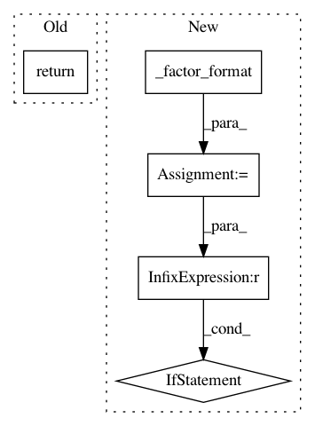

6c0cd9b623c4801e9fbe8ba3f9fa1708bb1ead08,skbio/io/_registry.py,,_formats_for_docs,#Any#,892
Before Change
def _formats_for_docs(formats):
return "\n".join(
"- ``"%s"`` (:mod:`skbio.io.%s`)" % (fmt, fmt) for fmt in formats)
After Change
def _formats_for_docs(formats):
lines = []
for fmt in formats:
fmts = _factor_format(fmt)
if len(fmts) > 1:
lines.append("- ``%s`` (%s)" % (
fmts, ", ".join(":mod:`skbio.io.%s`" % s for s in fmts)))
else:
lines.append("- ``"%s"`` (:mod:`skbio.io.%s`)" % (fmt, fmt))
return "\n".join(lines)
In pattern: SUPERPATTERN
Frequency: 3
Non-data size: 5
Instances
Project Name: biocore/scikit-bio
Commit Name: 6c0cd9b623c4801e9fbe8ba3f9fa1708bb1ead08
Time: 2014-09-12
Author: ebolyen@gmail.com
File Name: skbio/io/_registry.py
Class Name:
Method Name: _formats_for_docs
Project Name: biocore/scikit-bio
Commit Name: e7440781d39a561aeb2d168a6fae1a7b78ca7590
Time: 2014-08-18
Author: ebolyen@gmail.com
File Name: skbio/io/_registry.py
Class Name:
Method Name: get_writer
Project Name: biocore/scikit-bio
Commit Name: e7440781d39a561aeb2d168a6fae1a7b78ca7590
Time: 2014-08-18
Author: ebolyen@gmail.com
File Name: skbio/io/_registry.py
Class Name:
Method Name: get_reader